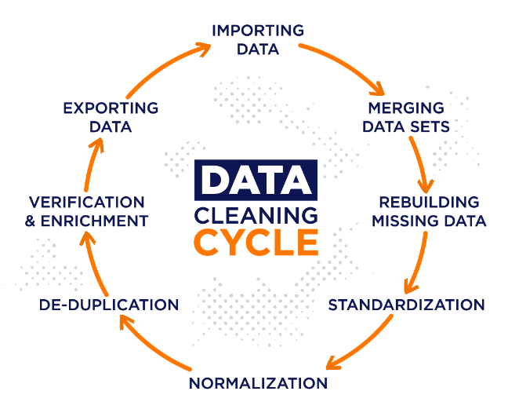
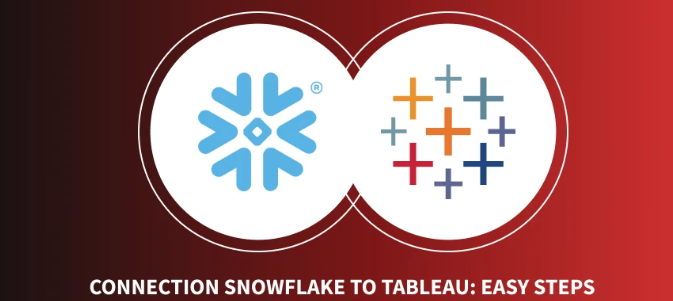
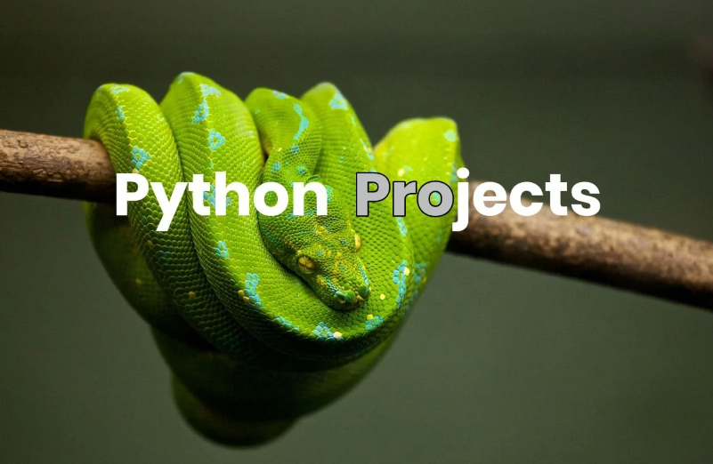
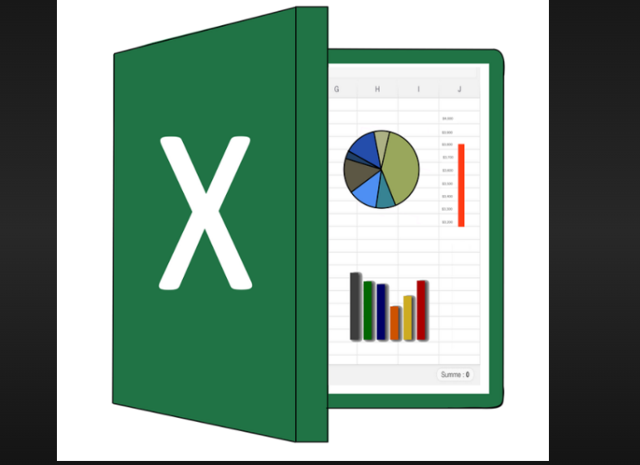

In this projects we are cleaning data using different technologies.
Data cleaning involves identifying and correcting errors or inconsistencies in datasets to ensure accuracy and reliability for analysis. This process includes removing duplicates, handling missing values, standardizing formats, and resolving inconsistencies.
Explore Covid-19 dataset in SQL: analyze trends, demographics, and patterns to understand impact, using queries for insights and visualization.
Tableau projects involve using Tableau's data visualization software to create interactive and insightful dashboards and reports. Users can connect to various data sources, analyze information, and present findings in a visually appealing way. Tableau's intuitive interface and powerful features make it a valuable tool for businesses and analysts to explore and communicate data effectively.

Load csv data from a food-truck business that operates across the globe into Snowflake DB, analyze product sales,highest revenue generators,integrate weather data for insights, conduct geospatial analysis, and create interactive Tableau visualizations for executives. Leveraging Snowflake for data enrichment and Tableau for dynamic visualizations

Python projects involve using the Python programming language to develop software applications, automate tasks, or analyze data. With a vast ecosystem of libraries and frameworks, Python enables developers to create powerful solutions efficiently.In this projects, we analyze different data sets with maplibs,pandas, numpy and seaborn, exploring variables influencing gross revenue to inform strategic decisions effectively.

Excel can be widely used for organizing, analyzing, and presenting data. It offers functions, formulas, charts, and macros for various tasks. Its user-friendly interface and extensive features make it vital in various fields to streamline workflows and make informed decisions based on insightful data analysis.

A Power BI project is a powerful data analytics and visualization tool to gather, transform, and analyze data from various sources. Through intuitive dashboards, interactive reports, and real-time updates, users can gain valuable insights to drive informed decision-making across their organization.
Azure projects involve using Microsoft's cloud computing platform to build, deploy, and manage applications and services. It offers a wide range of tools and services for tasks like hosting websites, storing data, and running virtual machines. With Azure, businesses can scale their projects easily, access resources on-demand, and benefit from high levels of security and reliability.
Machine learning involves teaching computers to learn from data and make decisions or predictions. It relies on algorithms that analyze large datasets to recognize patterns and make intelligent choices.